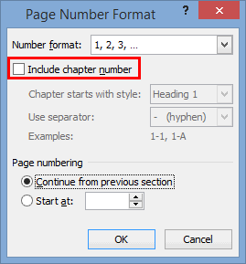
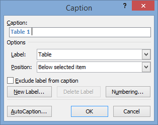
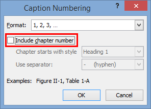

Coordinating caption and page numbers with headings14/04/15

If you’ve set up numbered headings in your Microsoft Word document you might be wondering how to coordinate all the other numbers in your document with your headings. This article will discuss ways to add chapter numbers to page numbers and caption numbers, in the format of 1-1, 1-2 for chapter 1 and 2-1, 2-2 for chapter 2. Typically you use the Heading 1 style to signify a new chapter.
Page numbers
It’s extremely simple to set up page numbers that match your chapter numbering in Microsoft Word, and it’s well worth it when you’re organising a large document into numbered chapters.
First set up basic page numbering in your Word document. To add page numbers to a Word document:
- Go to the Insert tab.
-
Click the Page Number button in the Header & Footer area.

- Select a style of page numbering.
Once your Word document has basic page numbers, format the page numbers to include chapter headings:
- Go to the Insert tab.
-
Click the Page Number button in the Header & Footer area.
- Click Format Page Numbers...
-
Select the Include chapter number checkbox to number the pages 1-1, 1-2, 2-1, 2-2 etc.
 - To change the numbering to reflect a different heading level change the value in the Chapter starts with style field. The default setting uses the Heading 1 numbering as the chapter number. If you changed this value to Heading 2 your numbering system could be 1.1-1, 1.1-2, 1.2-1, 1.2-2 etc.
Next month I’ll introduce sections and talk about how you can use them to create a more complex page numbering scheme.
Caption numbers
Table and figure captions can also be numbered to match chapter heading numbers.
The process for setting up numbered captions is very similar to setting up the page numbers; the Caption Numbering window is functionally the same as the Page Number Format window. To set up automatically numbered captions you need to use Word’s built in captions:
- open the Caption window for your particular table or figure
- type in the caption for that object
- set the label and position of the caption
- add numbering to the caption.
To open the Caption window:
- For a table:
- Hover your mouse over the table.
- Right click the icon in the top left corner.
-
Select Insert Caption...
The Caption window is displayed.
- For a figure:
- Right click on the figure.
-
Select Insert Caption...
The Caption window is displayed.
- From the References tab:
- Select the item you want to make a caption for.
- Open theReferences tab.
-
Click Insert Caption in the Captions area.
The Caption window is displayed.
To add chapter numbering:
-
Open the Caption window.
 - Click Numbering...
-
Select the Include chapter number checkbox to number the captions 1-1, 1-2, 2-1, 2-2 etc.
 - To change the numbering to reflect a different heading level change the value in the Chapter starts with style field.
Hope you have a beautifully coordinated chapter numbering system in your Word document by now!
All images in this article are screen captures of Microsoft Word 2010, but the process is the same in Microsoft Word 2013 and Microsoft Word 2007.